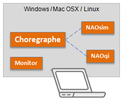

NAO comes with:
There are also Tools for programmers, allowing remote control of the robot and the expansion of its capabilities.
Choregraphe is a visual programming language. It allows you to create animations and behaviors for your NAO, test them on a simulated robot before trying them with your real NAO, and also monitor and control NAO. For a quick description, see Choregraphe overview, to learn and use it, see Choregraphe User Guide.
Monitor is dedicated to give you an elementary feedback from your robot and a simple access to its camera settings. For further information, see Monitor.
NAOsim is a simulator where you can test NAO behaviors and your algorithms in a virtual world. You can modify the environment by inserting and modifying objects of various shapes. For further information, see NAOsim.
Getting started
To install desktop software, see Software Requirements and Software Installation.
Create your own code, using:
Depending on the chosen language, SDKs allows you to: